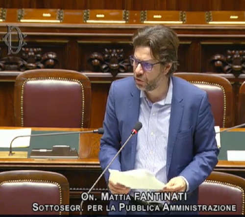
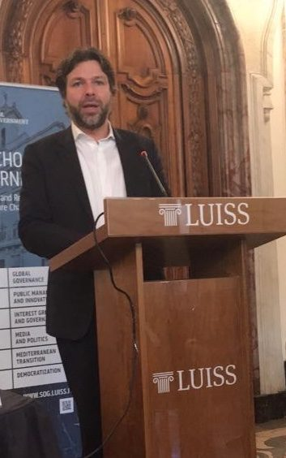

IGF Italia
UN-related forum focused on digital governance, rights and artificial intelligence. It has contributed to the organization of EuroDIG since 2019. igf-italia.org →
Management engineer, Member of Parliament, Undersecretary of State, digital entrepreneur.
A career built across institutions, innovation and international contexts.
Mattia Fantinati is the founder and sole director of Ainnova, a company specialized in Artificial Intelligence. He served as a Member of the Italian Parliament in the Chamber of Deputies and as Undersecretary for Public Administration. His main areas of interest are Digital Transformation in Government and Innovation Management.
He was appointed by the Secretary-General of the United Nations as a member of the MAG (Multistakeholder Advisory Group) of the IGF. He has been President of IGF Italia since 2021. At the United Nations he represents Italy in the roundtables of the HLPDC on Digital Cooperation.
A management engineer, with postgraduate specialization at SDA Bocconi, Manchester Metropolitan University and the LSE (London School of Economics). He regularly takes part in conferences on digitalization organized by ITU, WSIS, CES, E-Leaders and the OECD.

UN-related forum focused on digital governance, rights and artificial intelligence. It has contributed to the organization of EuroDIG since 2019. igf-italia.org →
Company specialized in AI, cyber, data governance, strategic compliance and accountability for public and private organizations. ainnovaadvisory.com →
Innovative startup applying AI to education, inclusion and social innovation. openfantasia.it →

Ministry for Innovation and Digitalization of Public Administration
He followed the initiatives of the international and Italian IGF and the HLPDC (High Level Panel on Digital Cooperation) at the United Nations on behalf of the Minister for Innovation.
Presidency of the Council of Ministers
He was primarily responsible for the digitalization of public administration. He represented the Italian government in Europe and the United States to identify best practices in digital transformation and e-government.
Standing Committee on Foreign Affairs
President of the parliamentary intergroup on digital transformation and internet governance. Member of the parliamentary group on Artificial Intelligence at the OECD. Member of the Foreign Affairs Committee with a focus on cybersecurity and digital cooperation on human rights. Italian candidate to the CEPA at the United Nations.
Industry, Innovation, Tourism · Counterfeiting Committee
He promoted a special study on the impact of future technologies (AI) on work and tourism. He led the approval of two laws: one against relocation involving public funds and another on the offsetting of tax collection notices against credits owed by the State. Party lead for Tourism and drafter of the national program for the 2018 elections.
Degree in Management Engineering
School of Management — specialization in management and strategy
MMU — specialization in international economics
LSE — specialization in economics and politics
Originally from Verona, he graduated in management engineering in 1999 from the University of Brescia and subsequently completed postgraduate specializations in economics in Italy and abroad: SDA Bocconi, MMU (Manchester Metropolitan University), Peking University and LSE (London School of Economics).
He built significant experience within Italian and international multinational companies, specializing in the renewable energy sector. At the age of 30 he opened his own engineering practice, then a small company in industrial plant engineering, and later served as Country Manager Italy for a German photovoltaic company.
He served as a board member of the Order of Engineers of Verona (2010–2014), handling IT and digital transformation matters, and as national contact point for the Young Engineers Network. He ran in the national elections in 2013.